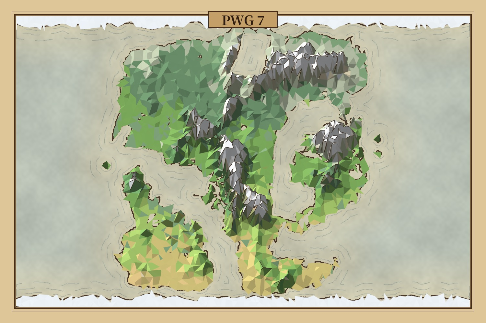
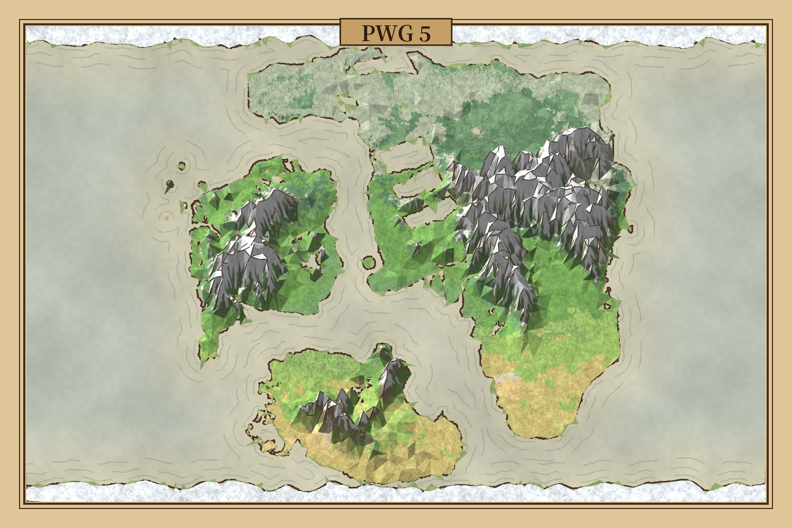
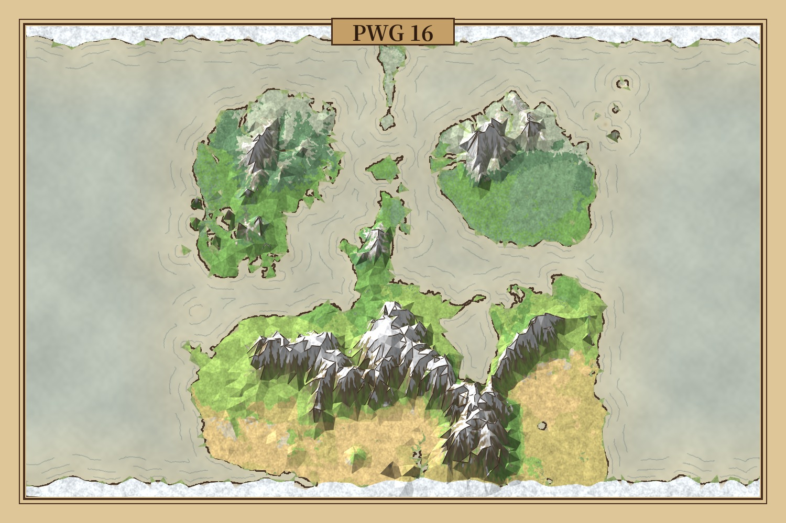
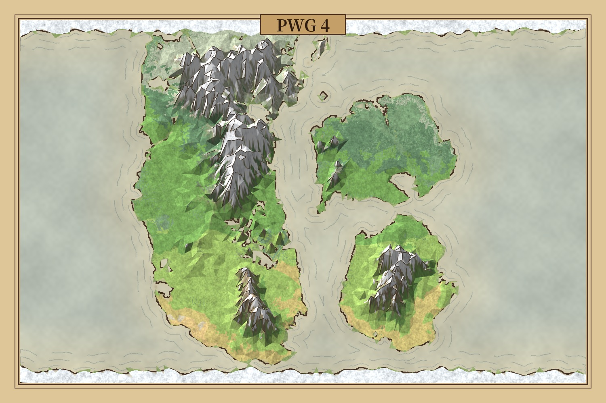
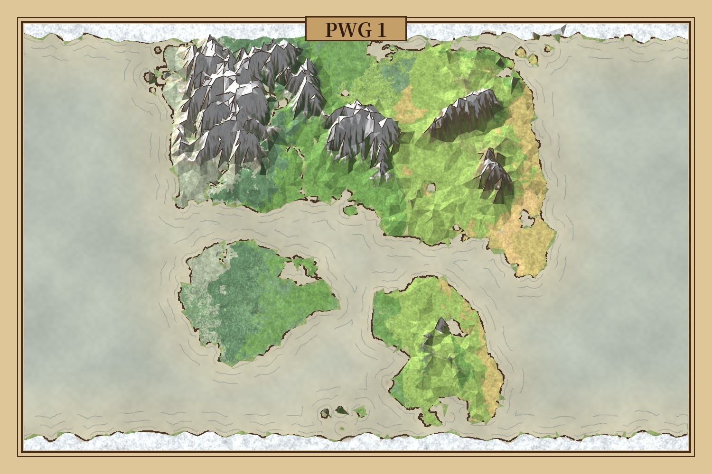

一番粗いローポリを、面のUV加工で色付けする(試作・11-20)
概要: mapstyle41(一番粗いローポリ、面の数は約5,000)を、面ごとの単色ではなく、UV加工で色付けしました。UV加工とは、地図の平面に色の絵(テクスチャ)を先に作り、各面にその一部を貼り付けて色を付ける方法です。陰は面ごとにそのまま掛けています。各図は上=mapstyle41(単色)、下=今回(UV)。
やり方
- テクスチャ: 群系の色 + 高いほど岩・雪の色 + 細かい模様(3段階の大きさのむら)を、地図と同じ位置に作る。
- 貼り方: 各面の3つの頂点について、地図上の位置(=UV)を、面の画面での形に合わせて貼り付ける(三角形ごとの変形)。山は高さの分だけ画面で上に伸びるので、模様も一緒に伸びる。
PWG seed7

絵番号 E174
絵番号 E001
PWG seed5
絵番号 E175

絵番号 E002
PWG seed16
 絵番号 E176
絵番号 E176

絵番号 E003
PWG seed4
 絵番号 E177
絵番号 E177

絵番号 E004
PWG seed1
 絵番号 E178
絵番号 E178

絵番号 E005
目で見た評価(各1枚)
- 面の形と陰は残ったまま、面の中に細かい模様がついた。単色の面の「べったり感」が減り、緑や砂色にむらが出て、絵としての質感が上がった。
- 面の境目の色の段差が弱くなり、粗い面でもつながって見える。
- 模様は今のところ乱数のむらだけ。草や岩の絵の模様(手描きの質感)ではない。
- 上下の氷の帯にも模様が付き、前より氷らしい粒状に見える。
限界・未確認
- 各1枚・目視のみ。iPhoneでの見え方・処理時間は未測定(描画は約1.8秒で、単色と同程度)。
- 「面でUV加工して色付け」は、面にテクスチャを貼る、と解釈した。別の意味ならご指摘ください。
- テクスチャの絵柄(模様)は、まだ決めていない。
次: テクスチャの絵柄を、どういう質感にするか(草・砂・岩の手描きの模様など)決める。